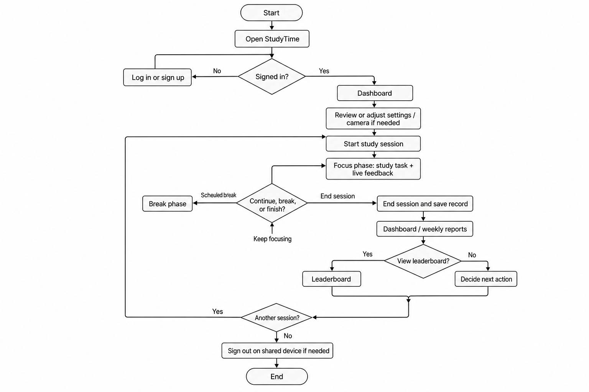

Project: StudyTime
We grounded this report in three complementary sources, chosen to balance depth, honesty about our stage in the project, and fit with Part 1’s goal (understanding the problem before locking a final design).
A. Interpretive evaluation of the StudyTime prototype
We walked through the current web application as critical users: authentication, dashboard, study session (camera and timers), reports, leaderboard, and settings. We noted what the interface communicates, what it assumes about the user’s environment, and where breakdowns or anxieties might appear (e.g., permissions, empty states, trust in scores). This method is appropriate because StudyTime is the existing system we are evolving; structured inspection surfaces concrete constraints (browser-only vision, lighting sensitivity) that abstract interviews alone might miss.
B. Internal document review
We reviewed the project README and in-app copy to align our problem description with stated intent (focus monitoring, Pomodoro-style sessions, weekly reporting, optional cloud sync). This reduces the risk of inventing a problem statement that diverges from what the system actually tries to do.
C. Structured team reflection
The three of us are tertiary-level students who regularly study online or in hybrid settings. We held a short structured discussion (guided prompts: When do you lose focus? What do you do when you feel unproductive? What would make you distrust a study app?). This is not a statistically representative sample; we treat it as hypothesis-generating context, not proof of prevalence in the whole student population.
Methods we did not use (yet) and why
Together, these methods give us traceable evidence (prototype + docs) plus lived-student perspective (team reflection), while being explicit about limits on generalizability.
Problem in brief: Many students today carry out a large share of self-directed study at home or in informal spaces, often alongside digital distractions (messaging, social feeds, streaming) and ambiguous feedback about whether they were actually studying. Traditional tools—timers, to-do lists, calendars—help with scheduling but give little insight into sustained attention during a block of work. The result is a recurring gap between felt effort (time spent at the desk) and focused effort (time on task with attention aligned to learning goals). That gap feeds stress, self-blame, and difficulty improving habits because the user lacks actionable, time-bound feedback.
Why an interactive system matters: Attention during solo study is partially observable through lightweight sensors many laptops already have (webcam). A purpose-built interface can (1) externalize focus and breaks so the user does not have to constantly self-monitor, (2) record sessions in a way that supports later reflection without relying on memory, and (3) connect individual sessions to longer arcs (weekly trends, streaks, peer-relative motivation where appropriate). Without such a system, the problem remains cognitively invisible: the user knows they are tired or behind on readings, but not when or how often attention drifts in ways that are fixable through environment or habit changes.
StudyTime sits in this space as a study companion that makes focus and session structure visible and reviewable, while remaining bounded in its claims (supportive feedback, not high-stakes assessment).
We expect primary users to be higher-education students (undergraduate and early graduate), including hybrid and fully online learners; learners who already use laptops for readings, problem sets, and video lectures; and students who are motivated enough to start a session but struggle with consistency, phone use, or long uninterrupted blocks.
| Characteristic | Why it matters |
|---|---|
| Variable study spaces | Lighting, background, and camera angle affect vision-based signals. |
| Heterogeneous devices | Webcam quality, CPU, and browser behavior change latency and reliability. |
| Privacy sensitivity | Camera use raises trust, storage, and visibility (e.g., leaderboards). |
| Accessibility and inclusion | Not everyone can use webcam cues equally; user base exceeds ideal lab conditions. |
| Motivation profiles | Some want competition; others want private improvement only. |
| Academic workload volatility | Exam vs. light weeks change acceptable session length and nudge tolerance. |
Secondary stakeholders: institutions (integrity and acceptable use), and housemates or family who share spaces and may appear on camera inadvertently.
Tasks are interruptible and emotionally loaded, so system tasks are never purely mechanical.
Goal: Complete a meaningful study period with awareness of focus
1. Prepare to study — 1.1 Choose location and device → 1.2 Open StudyTime and authenticate → 1.3 Configure or confirm settings → 1.4 If using camera: grant permission, verify preview, adjust framing/lighting.
2. Run a study session — 2.1 Start session and focus phase → 2.2 (repeat) Monitor live feedback while working → 2.3 Respond to distractions → 2.4 Use breaks → 2.5 End session and confirm save.
3. Review and orient — 3.1 Dashboard or weekly report → 3.2 Interpret aggregates → 3.3 Optionally leaderboard → 3.4 Decide next action.
4. Maintain account and trust — 4.1 Understand data storage → 4.2 Sign out on shared machines.
Static image (plain background): assets/part1-studytime-flowchart.png at project root — use in Word or Google Docs.

Open this HTML in a browser for the live Mermaid version below. For edits, use mermaid.live.
flowchart TD
Start([Start]) --> Open[Open StudyTime]
Open --> Auth{Signed in?}
Auth -->|No| Login[Log in or sign up]
Login --> Auth
Auth -->|Yes| Dash[Dashboard]
Dash --> Prep[Review or adjust settings / camera if needed]
Prep --> Sess[Start study session]
Sess --> Focus[Focus phase: study task + live feedback]
Focus --> Gate{Continue, break, or finish?}
Gate -->|Keep focusing| Focus
Gate -->|Scheduled break| Brk[Break phase]
Brk --> Focus
Gate -->|End session| Save[End session and save record]
Save --> Review[Dashboard / weekly reports]
Review --> LB{View leaderboard?}
LB -->|Yes| Board[Leaderboard]
LB -->|No| Next[Decide next action]
Board --> Next
Next --> Again{Another session?}
Again -->|Yes| Sess
Again -->|No| Out[Sign out on shared device if needed]
Out --> End([End])
Strengths: Clear information architecture; saved sessions support reflection; optional Supabase path for multi-device use; calm visual language; documentation acknowledges limits of sensing.
Deficiencies and risks: Trust and comprehension of webcam analytics; cold start / empty states; performance on low-end hardware; leaderboard stress for some users; environmental variance producing inconsistent scores if not framed well.
The product intersects individual habit formation, peer comparison, and institutional expectations. Browser permissions, client-side ML weights, and institutional networks all constrain deployment. Adjacent tools (timers, LMS, wellness apps) set comparative expectations; tighter coupling to attention signals raises the bar for explainability and ethics.
| Criterion | Example measure |
|---|---|
| Learnability | Time to first saved session; think-aloud success |
| Trust & fairness | Likert on score vs. subjective focus |
| Low cognitive load | NASA-TLX or simplified workload post-session |
| Error recovery | Scenarios after permission/network failures |
| Efficiency of review | Time to answer “How was my week?” |
| Inclusivity & control | Paths without camera; settings discoverability |
| Social feature safety | Opt-in rates; affect among low-ranked users |
To save as Word (.docx): open this file in Microsoft Word → File → Save As → Word Document (.docx). To use in Google Docs: File → Open → Upload, or paste from the companion .md file. For a static diagram in Word, export PNG/SVG from mermaid.live.